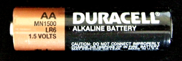

Module 4—Batteries and Balance
 Read
Read

Chances are that the most-used type of commercial electric cell you found in the "battery" audit you conducted in Lesson 1 was a type of dry cell. In the Reflect and Connect section of Lesson 1 you read about “dry cells,” cells in which the quantity of water within the cell has been reduced, but the properties of the electrolytes have been maintained.
A modification of the dry cell is the alkaline dry cell. The modification did not affect the measured cell potential, but it did improve the performance of the cell. Go to “Table 2” on page 616 of the textbook and read the information comparing the dry cell to the alkaline dry cell. Can you classify the “Characteristics and uses” for the alkaline dry cell listed in the table according to perspective?
Alkaline cells use KOH as an electrolyte, which forms a basic, or alkaline, solution. Recall that as the concentration of OH- increases in a solution, the concentration of H+ is reduced. Basic electrolytes, therefore, reduce the possibility that H+ ions will act as an oxidizing agent in the battery. In other words, alkaline batteries tend to last longer before “going dead.”
Alkaline cells typically produce a potential that is comparable to a zinc-carbon cell (approximately 1.5 V). However, the electrolyte in a zinc-carbon cell is slightly acidic. This makes the zinc-carbon cell somewhat inefficient because both H+ ions and the intended oxidizing agent are reduced. Because of the low concentration of H+ ions and the undesirable reaction they promote, alkaline cells can deliver significantly higher currents. This combination of higher current and longer life is a very desirable characteristic for batteries that run devices like CD players, calculators, and smoke alarms.
Consumer cells are most often evaluated in terms of their durability and convenience. When it comes to batteries, social perspectives, which demand that portable communication devices like cellular telephones stay connected, have a much higher priority than, say, environmental perspectives, which consider the consequences of using all these batteries.
 Reflect on the Big Picture
Reflect on the Big Picture
 Retrieve your copy of the Module 4: Lesson 2 Assignment that you saved to your computer earlier in this lesson. You will record your response to Reflect on the Big Picture in Part 1 of the Assignment document.
Retrieve your copy of the Module 4: Lesson 2 Assignment that you saved to your computer earlier in this lesson. You will record your response to Reflect on the Big Picture in Part 1 of the Assignment document.
Look at the picture shown. Have you ever seen a cell in this condition? Sometimes an alkaline dry cell may leak contents as a result of a faulty seal in its construction. How should you deal with a leaking cell of this type? Use a variety of resources (e.g., textbook, Materials Safety Data Sheets, Internet) to research how a leaking alkaline dry cell should be safely removed from an electronic device and disposed of. Prepare disposal instructions that you could provide to a family member.
Save any information about concerns or procedures for disposal of waste from alkaline dry cells or other cells in your course folder. You may refer to this information later in this lesson as you consider the environmental impact of using these cells.
 Module 4: Lesson 2 Assignment
Module 4: Lesson 2 Assignment
If you have not already done so, retrieve your copy of the Module 4: Lesson 2 Assignment that you saved to your computer earlier in this lesson. Complete Part 1. You will receive instructions later in this lesson on when to complete the rest of the Assignment and when to submit your work to your teacher.